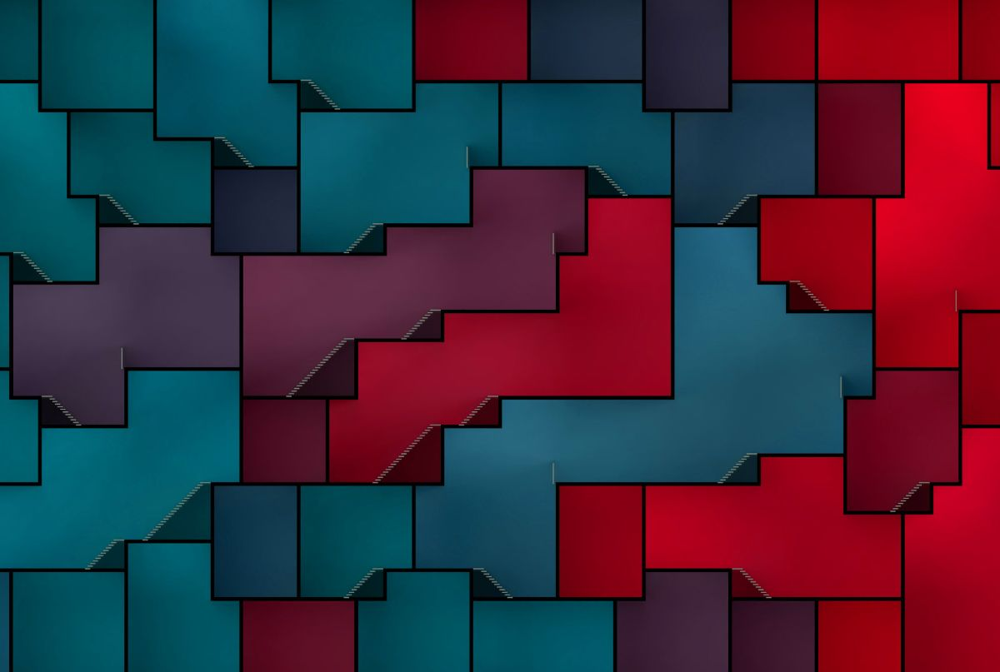

I am an independent programmer and designer in love with virtual worlds and game development.
I believe in first principles thinking, and that programmers should not be adding artificial complexity to the programs they create. I do have academic appreciation for strange and abstract things, but lately I prefer simpler tools where the programmer can understand what is going on under the hood.
Posts
Celestial Fruit on Earthly Ground
Interactive online installation
I am particularly proud of my contribution to the realization of celestialfruit.org with Jonathan Reus. The installation is an ongoing and open interactive artwork. It’s conceived as a living tapestry of visual and sonic traces gathered through artistic collaborations and micro-commissions.
The work focuses on the five-string banjo, a historically complex musical instrument that can be thought of as a map of material-embodied cultures, packed with the stories and ideas of people; their migrations and exchanges. Moving around through an online virtual universe, the visitor navigates and reassembles these elements in a way that mirrors the transmission and transformations of culture itself as a living, moving, and complex entity. Besides the interactive experience, the work also operates as a method and engine for driving future collaborations at the meeting points of musical instruments, technology, and tradition.
This collaboration flexed my programming muscles in more than one way. It might be my first finished project where experimentation and changing the feature set regularly was the go to modus operandi instead of something unwelcome. During the three-month initial development period, I had to keep some semblance of structure while not overoptimizing or locking myself into a design corner. It sort of worked and I am not terribly unhappy with the resulting codebase, although the amount of cleanup tasks this produced is daunting. I am sure I'll get to that backlog one day (:
Having to implement a data driven scene building system and an animation system with simple scripting all over again makes me think whether I should finally bite the bullet and learn a game engine like Godot or Unreal instead of always rolling my own. I do admit that the tight time constraints made me step outside of my comfort zone and use way more framework-ey libraries than I otherwise would. The experience was as expected: there were a lot of out-of-the-box features, and a lot of out-of-the-box bugs. If I had to guess, the features still outweighted the extra trouble, even if it made me grumpy at times.

A gourd; has secrets inside
Monoceros
A Wave Function Collapse Solver and Grasshopper plugin
In 2020, Subdigital hosted a summer internship with the aim to develop and utilize a discrete materialization method of data-driven design with available fabrication technology. We picked Wave Function Collapse - a method already well known in the game development community thanks to people like Maxim Gumin and Oskar Stålberg, but still somewhat under-exploited at the time in the fields of computational design and architecture.
Ján Pernecký and I created the software tools necessary for the internship students to experiment with the method. We opted to make the WFC solver a plugin for Grasshopper, an node based programming language for computationally creating shapes and forms.
That initial summer exploration was later expanded on. Driven by usage experience and over the course of many observations, Ján Pernecký collapsed his original WFC tools into Monoceros, a full fledged Grasshopper plugin.
While my own work on Monoceros amounted to mostly brainstorming and rubber-ducking, I am glad it still uses the original solver from the summer because of the optimization work that went into it. To enable fast iteration for designers, we knew the tool needed to respond to parameter changes quickly, ideally real-time. The heavy lifting is therefore implemented in Rust and loaded into Grasshopper as a DLL. Inside the library itself, WFC slots and the modules they contained were represented as compact bit vectors of 256 bits and operated on by just a handful of bitwise instructions and bit-counting intrinsics. While initially worried about the 256 limit on the WFC module count, the projects rarely reach this limit in practice. A future extension might be to fall back to a less compact (and therefore possibly slower) representation for definitions with large module counts.

Bonn voids, designed with Monoceros; picture courtesy of Ján Pernecký & Subdigital